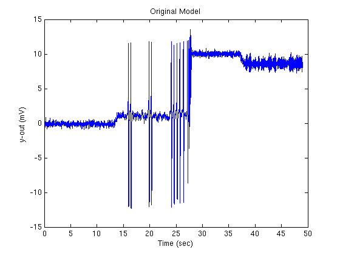

This is the readme for the matlab model associated with the publication Fietkiewicz C, Loparo KA (2016) Analysis and Enhancements of a Prolific Macroscopic Model of Epilepsy. Scientifica (Cairo) 2016:3628247 This model was contributed by Christopher Fietkiewicz. To run download and extract this archive. Start matlab and cd to the folder of the extracted archive and type "OriginalModel" on the matlab command line. After a few seconds you should see the below image which is similar to Fig 2 (left) in the paper: 